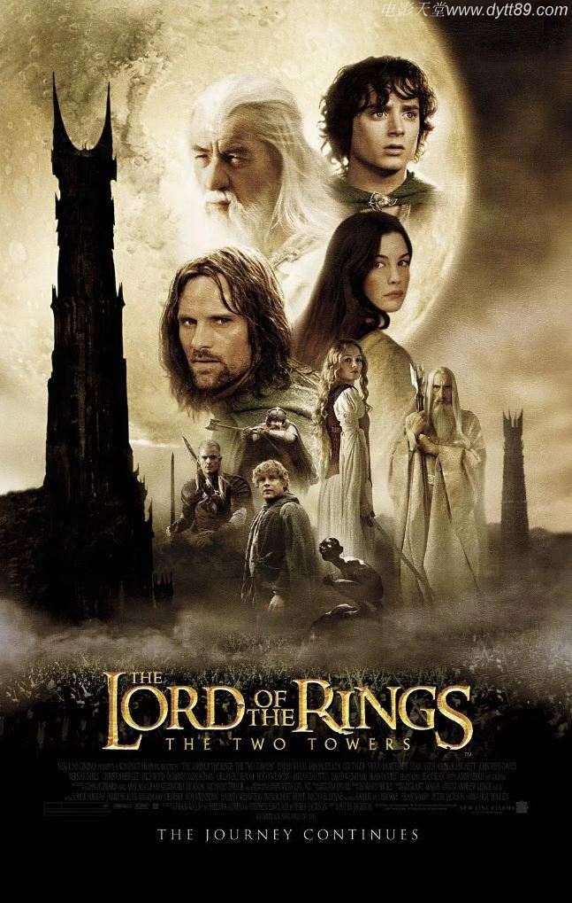

指环王2：双塔奇兵BD双语双字
片名：指环王2：双塔奇兵
发布时间：2021-04-24
指环王2：双塔奇兵迅雷下载地址和剧情：
◎译 名 魔戒二部曲：双城奇谋/指环王II：双塔/魔戒2：双塔奇谋
◎片 名 The Lord of the Rings: The Two Towers
◎年 代 2002
◎产 地 美国/新西兰
◎类 别 剧情/动作/奇幻/冒险
◎语 言 英语/辛达林语/古代英语
◎字 幕 中英双字幕
◎上映日期 2003-04-25(中国大陆)/2002-12-05(纽约首映)/2002-12-18(美国)
◎豆瓣评分 9.1/10 from 498106 users
◎IMDb评分 8.7/10 from 1437830 users
◎文件格式 x264 + ACC
◎视频尺寸 1280 x 720
◎文件大小 3085 MB
◎片 长 180 Mins
◎导 演 彼得·杰克逊
◎主 演 伊利亚·伍德
西恩·奥斯汀
多米尼克·莫纳汉
奥兰多·布鲁姆
维果·莫腾森
伊恩·麦克莱恩
凯特·布兰切特
比利·博伊德
杰德·布罗菲
丽芙·泰勒
安迪·瑟金斯
米兰达·奥图
雨果·维文
布拉德·道里夫
卡卢姆·吉廷斯
伯纳德·希尔
布鲁斯·霍普金斯
克里斯托弗·李
纳撒尼尔·利斯
罗宾·马尔科姆
约翰·贝西
萨拉·贝克
克雷格·帕克
布鲁斯·菲利普斯
Robert Pollock
约翰·瑞斯-戴维斯
奥利维亚·田內
卡尔·厄本
史蒂芬·乌瑞
大卫·文翰
菲利普·格里夫
肖恩·宾
约翰·诺贝尔
Jarl Benzon
Ben Britton
阿利斯泰尔·布朗宁
Sean Button
Robert Catto
罗德尼·库克
卡尔洛斯德林克沃特
西奥沙福瓦
本·弗兰舍姆
Jonathan Harding
Lucas Hayward
丹·汉纳
Paul Holmes
杰森霍德
彼得·杰克逊
Sam Kelly
Sandro Kopp
◎标 签 电影天堂|经典电影|美国|新西兰|2002|TOP250部经典电影|TOP250之NO.52|剧情|动作|奇幻|冒险
◎简 介
第二部在延续第一部风格的同时，故事呈现出多线发展的格局，情节有了更高的观赏性。
第一部结尾，博罗米尔被强兽人杀死之后，两个哈比族人皮平和梅利也被强兽人绑架，阿拉贡、精灵莱戈拉斯（奥兰多·布鲁姆 饰）、侏儒金利一路追踪强兽人，营救皮平和梅利，遇到了“复活”的白袍巫师甘道夫（伊恩·麦凯伦 饰）。此时，投降索伦的白袍巫师萨鲁曼控制了人类洛汉王国的国王，并派出大量的强兽人军队，准备消灭人类。阿拉贡、莱戈拉斯和金利在甘道夫的带领下，帮助洛汉王国对抗邪恶力量的入侵。
幸运的皮平和梅利被会说话的树精救了出来，并且遇到“复活”的甘道夫，在甘道夫的授意下，树精保护了两人的安全，并且带他们参加树精大会，大会上，树精们讨论对待中土大战的态度：是继续当中立者，逆来顺受，还是奋起反抗？
身负重任的佛罗多(伊莱贾?伍德 饰)和山姆继续向末日山脉前进，一路上被咕噜跟踪，弗罗多依靠至尊魔戒的力量，成为了咕噜的主人，在咕噜的带领下，他们到了末日山脉的入口，黑门。就在他们准备进入之时，博罗米尔的弟弟法莫尔出现，将他们带回了刚铎。弗罗多又遇上了新的危机：法莫尔想利用至尊魔戒的力量对抗萨鲁曼的攻击……
◎获奖情况
第75届奥斯卡金像奖(2003)
最佳影片(提名) 巴里·M·奥斯本/彼得·杰克逊/弗兰·威尔士
最佳剪辑(提名) 迈克·霍顿
最佳视觉效果 吉姆·瑞吉尔/兰德尔·威廉·库克/乔·莱特瑞/Alex Funke
最佳音效剪辑 迈克·霍普金斯/伊桑·范德莱恩
最佳音响(提名) 迈克·亨吉斯/哈蒙德·匹克/克里斯托弗·博伊斯/迈克尔·斯曼内科
最佳艺术指导(提名) 格兰特·梅杰/丹·汉纳/艾伦·李
第60届金球奖 (2003)
电影类 最佳剧情片(提名)
电影类 最佳导演(提名) 彼得·杰克逊
第56届英国电影学院奖(2003)
电影奖 最佳影片(提名) 巴里·M·奥斯本/彼得·杰克逊/弗兰·威尔士
电影奖 最佳导演(提名) 彼得·杰克逊
电影奖 最佳摄影(提名) 安德鲁·莱斯尼
电影奖 最佳剪辑(提名) 迈克·霍顿/Jabez Olssen
电影奖 最佳化妆/发型(提名) Peter Owen/彼得·金/理查德·泰勒
电影奖 最佳服装设计 恩吉拉·迪克森/理查德·泰勒
电影奖 最佳艺术指导(提名) 格兰特·梅杰
电影奖 最佳特殊视觉效果 吉姆·瑞吉尔/兰德尔·威廉·库克/乔·莱特瑞/Alex Funke
电影奖 最佳音效(提名) 迈克·亨吉斯/迈克·霍普金斯/迈克尔·斯曼内科/克里斯托弗·博伊斯/哈蒙德·匹克/David Farmer/伊桑·范德莱恩
电影奖 观众选择奖
第27届日本电影学院奖(2004)
最佳外语片(提名)
第3届美国电影学会奖(2002)
年度佳片
◎电影讲堂
故事线之间的连接运用了古典的蒙太奇手法，前段故事的最后一个镜头跟后段的第一个镜头在视觉上一脉相承。在人物塑造方面，《双塔》有几个亮点：弗罗多遭到戒指诱惑，徘徊挣扎的心理状态，使得人物增加了厚度。但最精彩的要数格鲁姆这个新出现的角色。该片的动作戏没有第一集那么多或密，但压轴的那场仍不负众望，其架势足以值回电影票价。这场戏既有战场的全貌，又没有忽视刀剑相逢的细节。全貌镜头的构图可谓气势磅礴，能让你屏住呼吸，忘掉画面中的大量内容其实是电脑动画而已。
新西兰导演彼得·杰克逊绝对可以称得上是鬼才，除了具备自编自导自演的功力之外还精通摄影、化妆、特效、服饰，连剧务打杂他都会插一手。身为《魔戒》迷，杰克逊曾认真阅读过原著12次之多，在第2集中，他表示观众看过后可能会发现电影与原著有很大的出入，因为他“并不希望照本宣科，破坏掉我对这部原著的想象力。”
新线公司在最初宣布影片档期的时候是计划半年一集的，最后却将这个`连续剧`的档期拖到了三年之长。影片的第一集是从2001年12月开始公映，但整个映期一直延续到了奥斯卡颁奖之后的4月份。稍事调整之后，新线又开炒影片的音像市场，并且一口气发行了宽屏版、满屏版DVD以及在欧美仍有市场的VHS录像带，全方位地炒作电视屏幕上的魔戒热。而在第二集公映之前新线又不失时机地以加长版与礼品装为卖点再次发行DVD诱惑那些苦等魔戒第二集的影迷。
《魔戒》的强劲对手则是戴着黑框眼镜，手拿魔法书，其貌不扬的哈利·波特。尽管《魔戒》第一部全球票房达到8.65亿美元，但《哈利·波特》第一部更创下了全球票房9.65亿美元的纪录。另外《哈利·波特》的小说全球销量为1.75亿册，而《魔戒三部曲》卖了半个多世纪才达到1亿册。当然在2002 年的奥斯卡角逐中，魔戒无疑是大赢家，《哈利·波特》则是颗粒无收。同年双方还再度在奥斯卡与票房两项`赛事`中展开角逐，而笑到最后的肯定是两片的幕后大老板——时代华纳集团。
`Saruman the White`的扮演者Christopher Lee把自己的角色比作是臭名昭著的希特勒，因为他们都用煽动性的演讲获得权利。其实Christopher Lee自己也是一个《魔戒》迷，他每年都要通读一遍三部曲的小说。他理解Frodo和Sam的关系就像是军官和他的勤务兵：照顾一个比他高头衔的军官。
《魔戒》的小说本来是一气呵成的，但由于二战后纸张严重短缺，那样厚一本书的成本太高了，所以作者不得不将其分为了三部曲，并且重新命名。
当初编剧安排的剧情是让Arwen也来到圣盔谷，和Aragorn一同参加这生死之战(剧组甚至已经拍摄了部分镜头)，但是……
Liv Tyler有一次上网，偶然看到了一些网友对这种改编的评论，把她称作`Liv Tyler, Xena Warrior`，这令她懊恼不已。Xena Warrior是何许人也呢？她是传说中古代的一位骁勇善战的女武士，国外还有过关于这个人物的电影和电视剧作品，其中的形象实在不敢恭维。
在拍摄Uruk-Hai在Rohan杀人放火的时候，由于要烧毁布景，所以基本必须一次性拍摄。而其间忽然狂风大作，有两个过于投入的摄影师，直到头发被烧焦了才发现火苗已经窜到他们面前了。两人只好转身就跑。
Uruk-Hai用的撞门槌，确实是一根`货真价实`的东西，用卡车运到的外景地。拍摄的时候，一群壮汉抬着它，真有点`无坚不摧`的架势，可谁知道 John Bach会说：`你们是娘娘腔，撞的力气像小精灵`。圣盔谷的城门居然丝毫不为所动，最后剧组无奈又重新制作了`豆腐渣`版本的城门，才完成了剧情。连导演Peter Jackson都说：`下次要是真的有敌人来，我还要找这帮人给我做门……`
精灵盔甲的设计者Daniel自然也少不了客串一把精灵战士的机会，可结果都被Viggo Mortensen演戏的时候，在前面挡住了自己露脸。
《魔戒》剧组很幸运的从惠灵顿找到了一位`身材像摔跤运动员`的铸剑师，此人完全用古代方法打造兵器，决不使用喷枪等现代化设备，因此一把剑通常要花 3-6天完成。而三部曲电影拍完之后，这样制作出的剑总共有几百把之多！
电影中Uruk-Hai使用的弩是滑杆式的，其最初设计源自德国，完全来自一本十五世纪德国兵器图鉴。
Grima Wormtongue的扮演者Brad Dourif是为这部电影牺牲最大的演员之一，因为拍摄期间他要刮掉脸上所有的毛发，包括眉毛。下面这个单词，是Brad Dourif的女友听说他又要回去补拍部分镜头之后，沉默很久才说出来的：××!
《魔戒》剧组的剑术指导就是当年扮演过黑勋爵替身的一位剑客。电影中不同种族战士的动作设计也不尽相同，Orlando Bloom也要学会精灵组的打斗方式。
Viggo Mortensen拍摄Aragorn一脚踢飞头盔这场戏时，一踢把两根脚趾踢断了。Viggo Mortensen并没有喊`Cut`。他以自己的伤痛为代价换来了精彩无比的表演。
挂伤的不仅是Viggo Mortensen一个，还有`万人迷`Orlando Bloom：精灵的替身压在他身上，把他的一根肋骨压断了。
Gollum在小溪里面抓鱼的那个镜头，是在严寒的冬天拍摄的。剧组动用了所有的探照灯和鼓风机，甚至还找来了消防队，才清除了溪流上面的积雪和冰层，真难以想象Andy Serkis在这样的环境中是如何完成镜头的。
有个镜头的拍摄地点正好是在一个军用靶场的边上，大家仿佛能从Frodo脸上看到突如其来的枪声的痕迹：他眨了眨眼睛又继续演下去。
电影里面很多建筑是依靠微缩模型拍摄的，这时候就只能依靠这些`战士`来预演了。剧组仿佛是要把全世界的玩具士兵都搜刮一空了。很多建筑是实景的四分之一，共有五十英尺宽。
`Massive`这个软件是专门为制作巨大规模的战争场面而设计的，让每个士兵都有人工智能。但初期版本显然还不够完善，看不到敌人的个体就会。
Eowyn的挽歌是用古英语唱出的，怪不得听不懂呢。
有关音效的制作也很有意思，例如有个镜头里面飞龙那特有的叫声，实际上是惠灵顿郊外的一头驴的嘶吼声。
◎影片评价
承前启后的史诗篇章。
虽然这部电影的动作戏没有第一部那么多或密，但压轴的那场仍不负众望，其架势足以值回电影票价。这场戏既有战场的全貌，又没有忽视刀剑相逢的细节。全貌镜头的构图可谓气势磅礴，能让观众屏住呼吸；影片画面中的大量内容的真实效果，也让观众忘掉这些其实是电脑动画而已。
◎影片截图
下载地址列表::点击下方荐片链接即可下载 本站专属下载器 专治迅雷无法下载
下载地址列表::由于迅雷不停封此下载链接，此链接已经更换成本站独家高速下载器，保证速度超级快 本站专用电影下载地址：www.jianpian.com！
magnet:?xt=urn:btih:6fc52fff22d442e76cffca52bd205bfb61bd27dd&dn=[电影天堂www.dytt89.com]指环王2：双塔奇兵BD中英双字.mp4magnet:?xt=urn:btih:b644966114ec4519a028ddd831ecb9b8d3ca1e6a&dn=[电影天堂www.dytt89.com]指环王2：双塔奇兵-2002_BD国英双语中英双字.mp4请把www.dvdqvod.cn分享给你的朋友,更多人使用,速度更快 DVDwww.dvdqvod.cn欢迎你每天来！